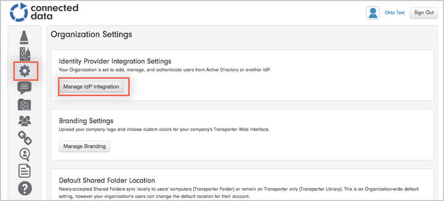
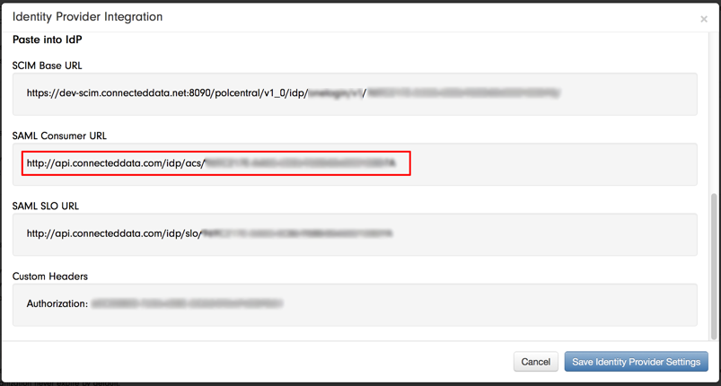
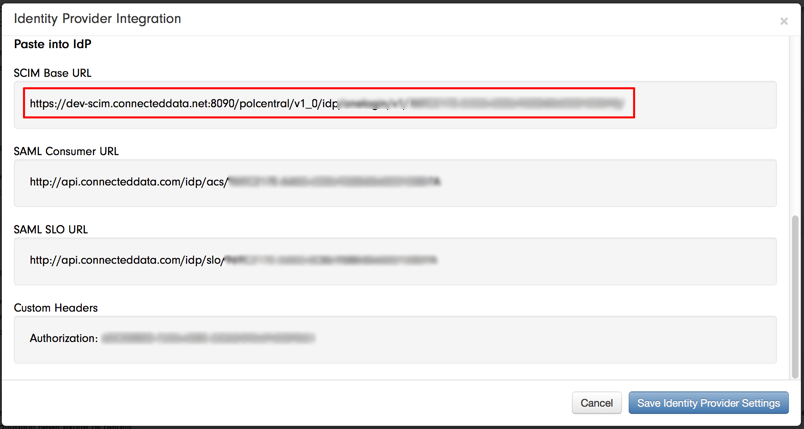
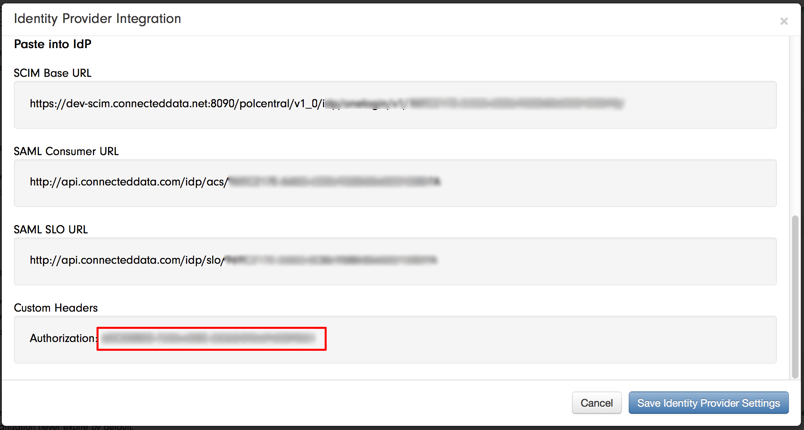
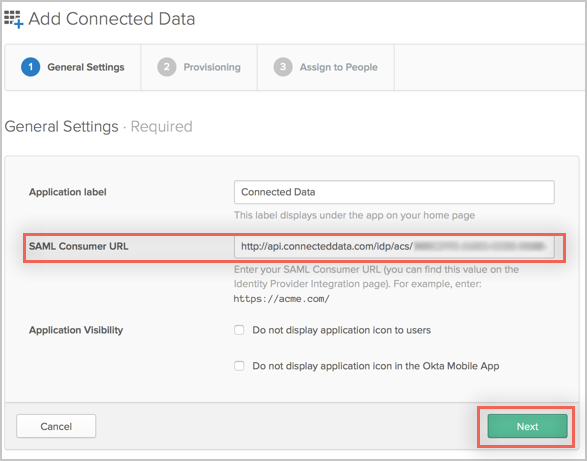
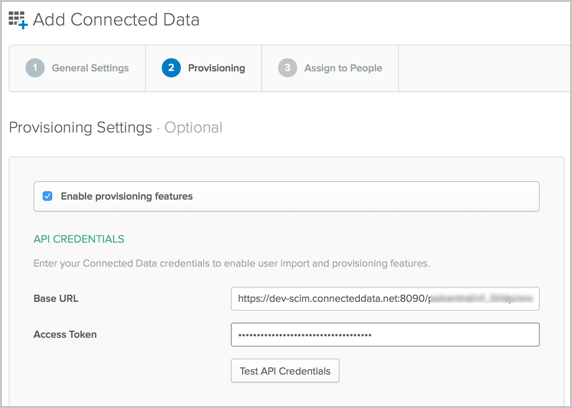

This guide provides the steps required to configure Provisioning for Connected Data, and includes the following sections:
The following provisioning features are supported:
Push Groups
Groups and their members can be pushed to remote systems. More about using group push operations you can find here: Using Group Push.
Import New Users
New users created in the third party application will be downloaded and turned in to new AppUser objects, for matching against existing OKTA users.
Import Profile Updates
Updates made to a user's profile in the third party application will be downloaded and applies to the profile fields stored locally in OKTA. If the app is the system of record for the user, changes made to core profile fields (email, first name, last name, etc) will be applied to the Okta user profile. If the app is NOT the system of record for the user, only changes made to app-specific fields will be applied to the local user profile.
Push New Users
New users created through OKTA will also be created in the third party application.
Push Password Updates
Updates made to the user's password through OKTA will be pushed to the third party application.
Push Profile Updates
Updates made to the user's profile through OKTA will be pushed to the third party application.
Push User Deactivation
Deactivating the user or disabling the user's access to the application through OKTA will deactivate the user in the third party application.
Reactivate Users
Reactivating the user through Okta will reactivate the user in the 3rd party application.
Before you can configure provisioning for Connected Data in Okta, you need to collect some values from Connected Data, as follows:
Login to Connected Data as an administrator.
In the left navigation pane, click the Organization Preferences icon to open the Organization Settings page.
Select Manage IdP Integration:

Make a copy of the value of SAML Consumer URL:

Make a copy of the value of SCIM Base URL:

Locate the Custom Headers section, and make a copy of the value of Authorization:

Close the Organization Settings page.
In Okta, navigate back to the General Settings section for the Connected Data app.
Enter the value you saved into the corresponding SAML Consumer URL field:

Click Next.
Check the Enable provisioning features box, then enter the values you saved for SCIM Base URL and Custom Headers into the Base URL and Access Token fields, respectively:

Scroll down and select the Provisioning Features you want to enable.
Click Save.
Currently Connected Data keep groups created within Connected Data and groups created by AD/IdP separately. Therefore during imports, you are unable to download groups created via the web.
A current Connected Data issue is that if you attempt to search by userName, their API actually searches for email instead. This can be a problem for users who have different userName and emails in OKTA.